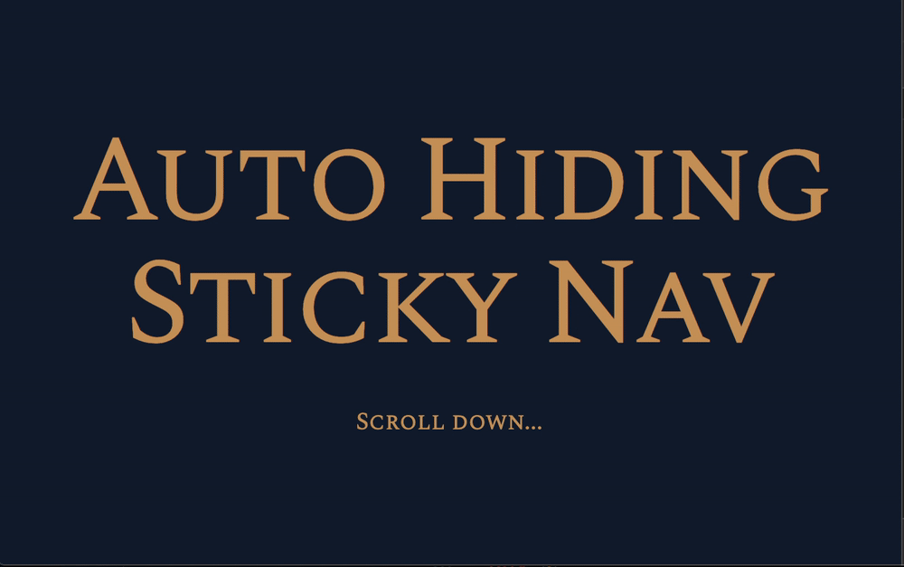

The sticky-nav we built in the last lesson works. But it doesn’t feel natural. It doesn’t feel natural because we don’t show (or hide) the amount that was scrolled.

We want to make the sticky nav feel more natural by adjusting the number of hidden pixels according to the scrolled amount.
Removing the animation
If we want to show the sticky nav according to the scrolled amount, we need to remove the animation we added.
/* Remove this */
nav {
transition: top 0.15s ease-out;
}
The scrolled amount
The scrolled amount is the difference between scrollPos and prevScrollPos
difference is NOT 1px every time. It can be any amount depending on how fast you scroll
These observations matter. We’ll need to use them later.
Hiding the nav when scrolling down
When we scroll down, we want to hide the <nav> element. To hide the nav element, we need to subtract the navigation’s top value by the scrolled amount.
Before we can subtract the current navigation’s top value, we need to know what this value is.
Notice the currentNavTop is a String? We need to convert it into a Number. We can do this with parseInt or parseFloat. We’ll use parseFloat here since there’s a chance that top has decimal values.
It showed NaN for the first time because nav.style.top is an empty string. We can’t use parseFloat to convert an empty string into a Number.
But why is it empty and not 0?
Remember we set top: 0; in CSS? If we want to get a value from CSS, we need to use getComputedStyle instead of the style property. The style property can only get inline styles.
Whoa! The top value can go all the way up to negative Infinity! We can’t allow this. If top is larger than 61px, we won’t be able to show the navigation straight away when the user scrolls up.
We need top to be a maximum of -61px.
To do this, we create a variable that stores the new top value. We’ll call this navTopValue. Then, we check whether navTopValue is smaller than -61px.
If navTopValue is smaller than -61px, we set nav.style.top to 61px.
At first, the upwards scroll feels natural. We reveal the navigation by the amount we scrolled. But the navigation stays at that same spot afterward because navTopValue became larger than 0.
We need to make sure the maximum value of navTopValue is 0.